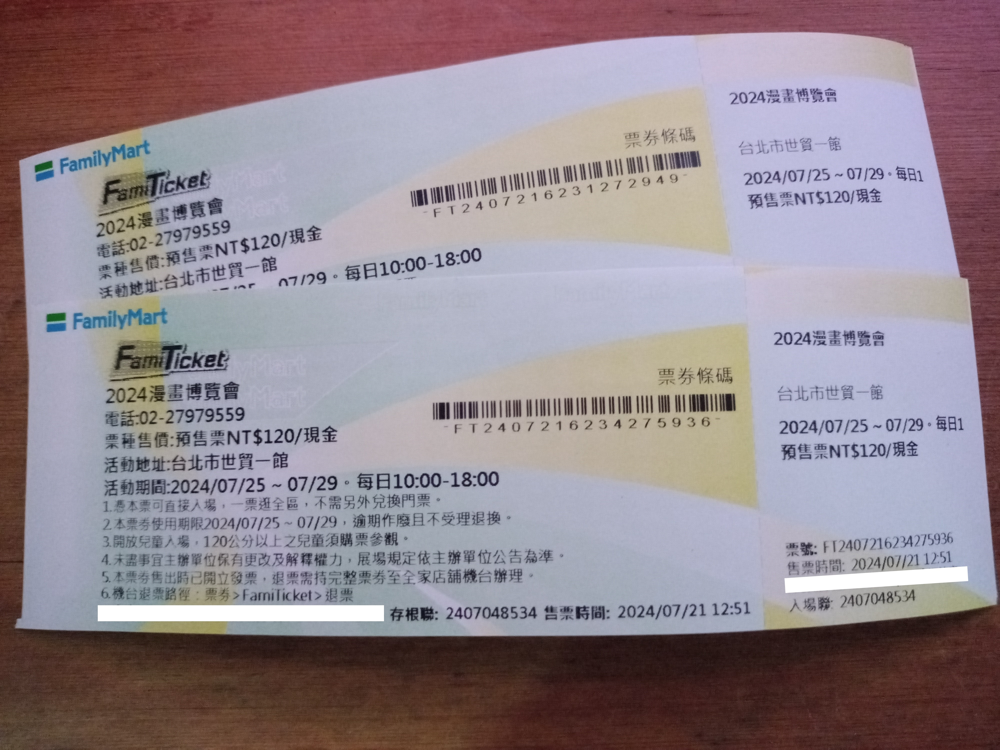
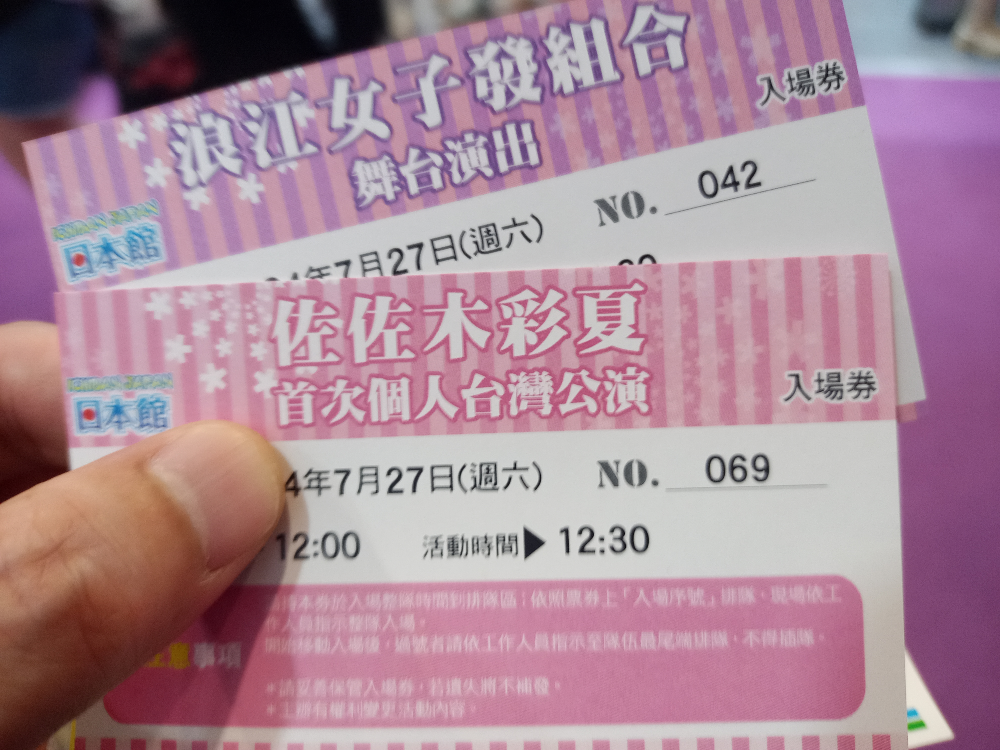
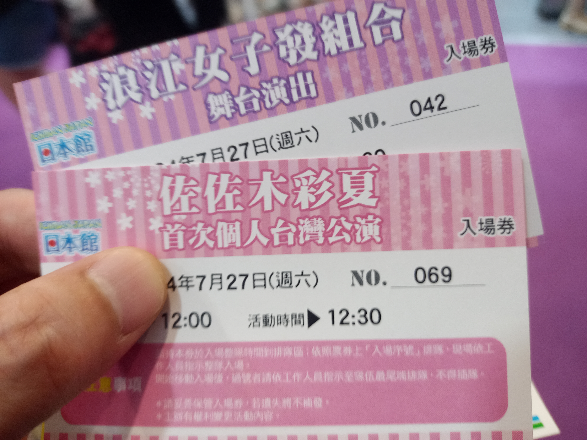
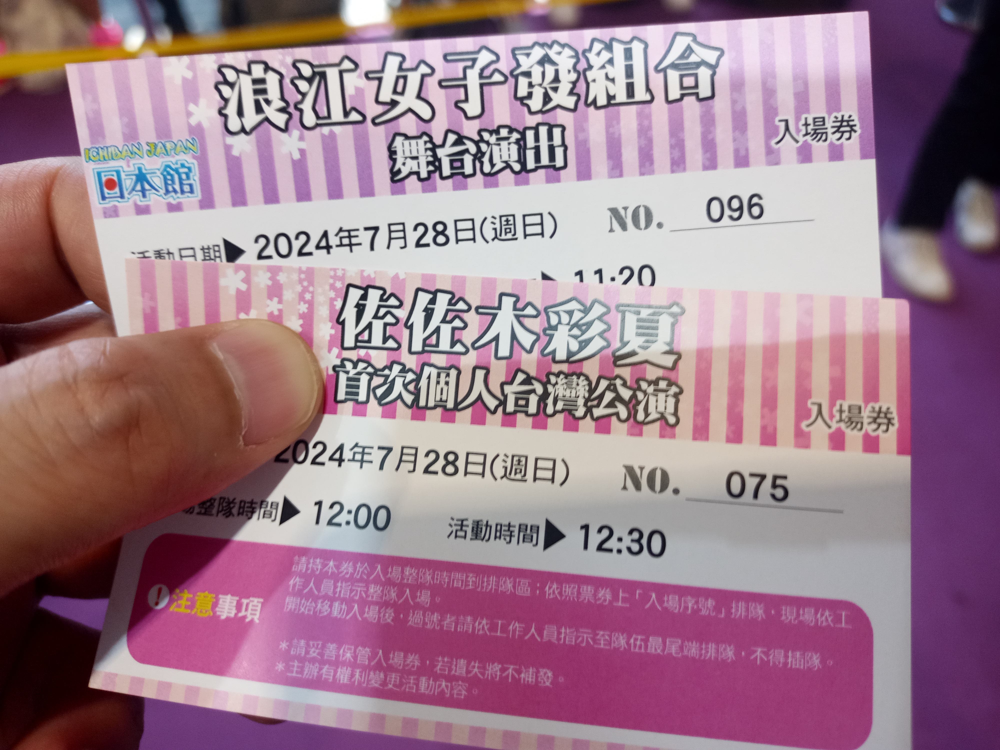
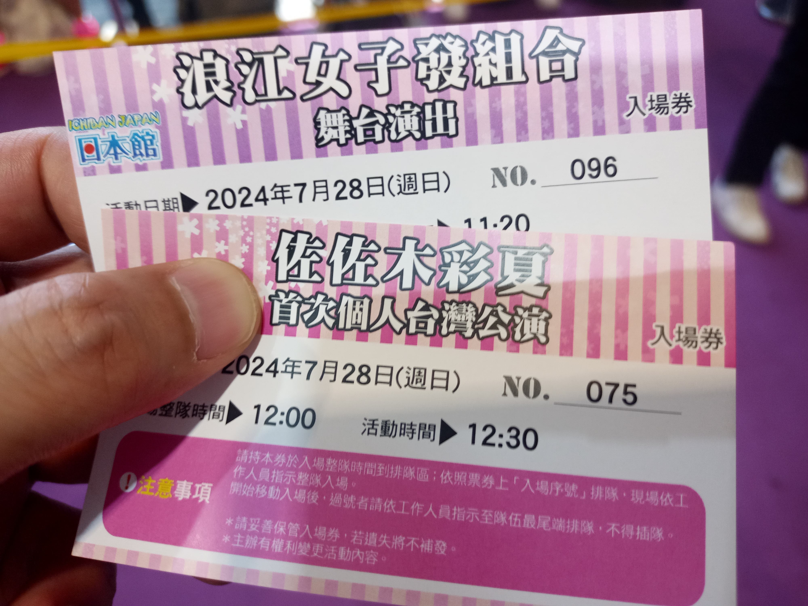
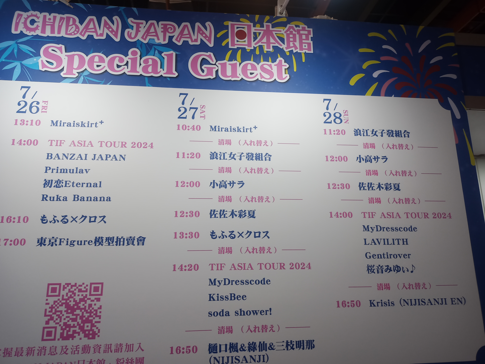

第23屆 漫畫博覽會
時隔5年由佐佐木彩夏與其製作女子偶像團體【浪江女子發組合】來台表演兩日，同時可視為桃草成員第一位來台灣公開個人表演。雖然屬於非海外單獨售票巡演且為小舞台，難免還是需要跟為數不少的日本官方旅行團武士跨海搶好位置，但是全程開放拍攝真是太香了。
2024年6月7日，跟著台灣【漫畫博覽會】官網宣布佐佐木彩夏與其製作女子偶像團體【浪江女子發組合】來台表演兩日，在台灣桃草FB社團也算是引起不小騷動，還是有點久旱逢甘霖的感覺。
而【漫畫博覽會】在台灣算是蠻有名於【台灣．台北．世貿一館】舉辦的大型活動，但對於老人我來說也是第一次嘗試，老人我在期限前先去全家便利商店直接購買比較便宜一點的【漫畫博覽會】預售門票，雖然沒有「搶票」的問題，心知肚明真正的考驗是當天的人潮。

時間快轉到第一天7月27日，昨晚竟然有點興奮到睡不太好，一早還是搭著捷運到會場。一路上滿滿的人潮，並且大部分都是年輕學子，可見動漫在台灣影響力之大。因颱風剛過的原因，天上有時會飄著細雨，人還是多到一個誇張。基本會場有多個入口可以排隊，目前不管是哪個入口，誇張到排隊的隊伍我去問，都不確定他們當前排的隊伍到時開放入場是不是真正能正確直接進入到入口。
反正我先到8號入口處隨便找一條隊伍先排著，離開放入場時間還很久，就先跟排我前面去過很多活動的前輩同學討教一下，增加一些經驗值。隨便聊到開放入場時間開始，看到8號入口附近人龍開始緩慢移動，我先聽前輩同學的建議直接往貼著建築物的隊伍找看看有沒有尾端可以接上去。挖靠！還好有聽話，貼著建築物的隊伍就算是尾端也很高機率就是主要隊伍，最後算是順利的快速進入會場。
 

進入會場後直奔日本館會場，一次換取佐佐木彩夏與團體【浪江女子發組合】兩張入場券，序號看起來還行，接著離日本館會場入場排隊還有一小段時間，帶著好奇心先去繞繞【漫畫博覽會】，想說反正也算是第一次。但好奇心真的會害死人，我太小看人潮的威力，繞到一半有一種回不去日本館會場的感覺，死命地擠擠擠，好不容易回到日本館會場前，心理已打定主意「我哪都不想再去逛了」。至於物販的部分主要為佐佐木彩夏與團體【浪江女子發組合】商品，團體【浪江女子發組合】沒有研究太多，佐佐木彩夏的商品直接真人肖像不然就是布偶，對於恥力不高的老人我就全部PASS了。
首先團體【浪江女子發組合】日本館會場入場時間已到，大家按著序號排隊。好巧不巧前面幾位都是台灣武士，聽著他們打著嘴砲也算便打發一些時間，不知不覺就進到會場等待節目開始。因為我一開始就準備用手機拍攝，所以位置選擇盡量找邊邊站，減少影響別人的視線，但在站定位後發現面對舞台左邊位置其實很差，因為有一根柱子會擋住，反而右邊比較沒有遮蔽物。算了，這場就當作加一點經驗值。
（備註：此雜記事隔多天才動筆，請原諒老人我記憶力差，若有出入請多多見諒）
M00. Overture 〜乘著浪江的風〜（Overture 〜浪江発の風にのって〜）
拉開序幕的登場曲，不知道是日本偶像常態，還是星塵偶像的慣例。
M01. 浪江頌（なみえのわ）
應該算是經典曲目，與台下互動蠻高的。
M02. 櫻梅桃李夢物語（桜梅桃李夢物語）
蠻有趣的一首歌，會把成員每個人特徵或小故事寫在歌詞，當然只來四位只有四位的歌詞可以聆聽到。
M03. 未來色彩的花朵（ミライイロの花）
應該也是經典曲目，台下互動也蠻高的。
中場MC
首先成員對現場武士打招呼，大部分台下大喊「阿玲！」還是比較多，成員展現的中文包含「謝謝」「請多多指教」。大致聊到台灣7月炎熱的氣候與【漫畫博覽會】恐怖的人潮，並稱讚來到會場的大家都是「勇者」，還有吃台灣火鍋時團體有成員狂吃冰小故事。接著下一首曲目剛好是剛配信的新單曲，簡單宣傳一下就開始下一段表演。
M04. 彩結（いろむすび）
雖然是剛配信的新單曲，日本武士台下應援反應也是不遑多讓。
M05. 與你再相會。（またキミと。）
最後一首應該也是經典曲目，台下維持高互動。
終場
這場算是團體【浪江女子發組合】第一場海外公演，台灣與日本距離很近，也希望多多支持，最後成員的「掰掰」陸續退場，結束第一天上半場的演唱會。
被人潮擠到怕的我就在會場附近徘迴等待，在下半場重頭戲佐佐木彩夏個人演出前，我不確定是不是我沒注意到工作人員的說明，入場時間排隊從原本室內變成室外，等到室外的人潮開始往會場移動時我才注意到其實要繞去外面排隊，最後工作人員的回覆是視為我遲到，等外面消化完我才能進去。但其實我是準備用手機拍攝，位置都會選擇找邊邊站，減少影響別人的視線，所以最後索性我就直接站最後面拍，就當作又被上一課。
（備註：此雜記事隔多天才動筆，請原諒老人我記憶力差，若有出入請多多見諒）
M00. overture
熟悉的阿玲個人登場曲，應該是只有在阿玲個人演唱會才聽得到，頭一回響徹在台灣，在現場的我心中激起一股小小激動，桃草成員第一位來台灣公開個人表演正式開始。
M01. Happy♡Sweet♡Birthday！（ハッピー♡スイート♡バースデー！）
就像是阿玲的台灣公開個人小型演唱會，當然個人單曲登場不意外，也算是不用飛往日本，在台灣也能一同感受阿玲個人演唱會氛圍，先用歡熱的High歌打聲招呼。
M02. 甜心戰士（キューティーハニー）
在【漫畫博覽會】當然是要唱動漫歌曲啊！雖然阿玲個人沒有專門幫動漫唱OP或ED，還是有配合一些活動翻唱不少動漫歌曲並配信，這首就是其中一首，應援起來也是相當火熱。
M03. 好想大聲說喜歡你（君が好きだと叫びたい）
這首也是其中一首翻唱並配信過的動漫歌曲，歌曲本身在台灣知名度很高，有趣的是阿玲快到歌曲結束時發生非常明顯的忘詞，這也是聽現場演唱「值回票價」的福利之一！看到阿玲不好意思又懊惱的表情，真的是快笑死。
中場MC
「私たちいま会えるアイドル，週末ヒロインももいろクローバー」「Z！！！！」開場，就算是個人登場也不會省略熟悉口號，喊一次賺一次。接著說明今日選曲有特別針對【漫畫博覽會】選唱一些動漫歌曲，以及上一首曲目的失誤。當中還有提到時隔5年才來台灣，此時我心想既然有心那就快點規劃4人再來一次吧。另外阿玲聽起來蠻喜歡台灣的茶品，也擔心台灣的天氣，必經颱風才剛過，也算是不幸中的大幸，至少活動沒有停止，希望與阿玲一起來的日本武士能好好在台灣享受一下旅遊的樂趣。
M04. 奔馳吧！（走れ！）
桃草神曲出現啦！雖然沒有全場關燈橋段，就算只有阿玲個人演唱，也算是有照顧到前輩或老粉絲群，直接螢光棒揮起來。
M05. 因為人家就是阿玲捏☆（だって あーりんなんだもーん☆）
佐佐木彩夏個人神曲之一，我覺得算是今日全部曲目大家喊得最大聲的一首，我想外面的台灣人會不會覺得【漫畫博覽會】裡面出現邪教，害我不時地想往外頭看看別人的反應，畢竟會場完全沒有隔音。
終場
最後「私たちいま会えるアイドル，週末ヒロインももいろクローバー」「Z！！！！」的道別，其實並不感傷，因為還有明天的演出可以好好期待。隨著阿玲的「掰掰」「謝謝」也結束了第一天阿玲的台灣公開個人小型演唱會。
第二天7月28日艷陽高照，今天的我已經不是沒經驗菜鳥，走出捷運門口直接往8號入口尾端方向前進，秉持者貼著建築物與直線隊伍條件滿足的隊伍排下去。雖然沒像第一天直接鑽進去這麼快，但是算是順順的進入會場，進入會場後到日本館會場領券，排隊號碼沒有比第一天好，還算是拿到基本入場門票，輕輕鬆鬆啊！離入場還有不少時間，記取第一天的教訓，專門往人潮比較少的路徑晃晃，找一個椅子愜意的等待表演開始。
 

首先團體【浪江女子發組合】按著序號排隊開始，這次我學聰明了，直接抓工作人員問排隊是在室內還是室外，哈！看來是室外，這次就順利跟著大隊伍整隊，只不過天氣太好，外面沒遮到太陽的地方根本熱到不行，後來我直接撐開一把大雨傘，並且舉高一點，不知能否一起舒緩附近排隊的人避免被陽光直射。最後依序進到會場等待節目開始，直衝右邊沒有柱子的邊邊準備拍攝。
（備註：此雜記事隔多天才動筆，請原諒老人我記憶力差，若有出入請多多見諒）
M00. Overture 〜乘著浪江的風〜（Overture 〜浪江発の風にのって〜）
拉開序幕的登場曲，成員依序登場。
M01. 彩結（いろむすび）
剛配信的新單曲，有種越聽越好聽的感覺，同時阿玲的編舞讓我開始覺得右邊真是好位置。
M02. 櫻梅桃李夢物語（桜梅桃李夢物語）
昨天有說過是首有趣的歌曲，但我注意的是在右邊能面對阿玲機率越來越高。
M03. 晴天的足跡（ハレノヒの足跡）
這首昨天沒出現過，應該屬於經典抒情歌，雖然不會有熱情的應援聲，但是台下互動也是十分熟練。
中場MC
首先成員對現場武士打招呼，在自我介紹環節依然努力展現「請多多指教」為數不多的中文。今天天氣恢復到7月的艷陽高照，並提醒大家多多注意。後面開始調侃沒法一起來台灣演出的成員，畢竟舞台會場最大背景是全員照片，這一小段還蠻爆笑的。此時阿玲有問大家有沒有去吃台灣特色小吃：小籠包，也希望阿玲這次來台都能吃到她想要吃到的東西。
M04. 浪江頌（なみえのわ）
昨日的第一首表演歌曲，但我比較在意阿玲能多來右邊的位置一點。
M05. 與你再相會。（またキミと。）
最後一首曲目好像阿玲有聽到祈禱，有特別到右邊的位置來，真的是太幸福了！
終場
提及部分成員衣服其實是第一次亮相，讓大家有多拍攝的時間，也希望未來能多多來台灣演出。最後成員的「掰掰」「謝謝」陸續退場，結束第二天上半場的演唱會。
即將來到下半場重頭戲佐佐木彩夏個人演出，二話不說直接抓工作人員問排隊是在室內還是室外，哈！這次換成是室內，最後依序進到會場等待節目開始，一樣直衝右邊沒有柱子的邊邊準備最後拍攝。
（備註：此雜記事隔多天才動筆，請原諒老人我記憶力差，若有出入請多多見諒）
M00. overture
熟悉的阿玲個人登場曲，第二天也是最後一天的個人表演正式開始，卯起來大喊吧！
M01. 好好工作（仕事しろ）
十分意外！沒想到會是這首歌，難道是因為明天星期一要上班嗎？有種目前還是社畜的老人我被無情的打回現實，不過就算被阿玲開嘲諷，還是很開心的感覺，繼續High下去。
M02. 椰子☆暑期（ココ☆ナツ）
這是桃草最強夏日代表曲之一，雖然沒有全員到齊，能在台灣現場聽到也是十分開心。除了有趣的「ココ」手勢外，其中一句歌詞「ライブは台湾」也讓現場十分興奮。台上阿玲開啟經典繞圈模式時我還很期待台下會不會也會有同步儀式，可惜當天小舞台人也不少，而且大家比較在意近距離與阿玲互動，所以沒看到台下有明顯的繞圈儀式，希望未來有機會圓夢。其實中間有聽出來阿玲發生一點點歌詞失誤，阿玲用可愛直接掩蓋，沒毛病！
M03. Early SUMMER！！！
延續前一首夏天的氣息，也非常適合台灣今日的天氣，還好是在室內，室內武士的情緒就像是與外面氣溫比賽一樣，High到炸裂。
中場MC
「私たちいま会えるアイドル，週末ヒロインももいろクローバー」「Z！！！！」開場，喊一萬次我都願意！果然今天歌單主題就是夏天，熱力滿點。阿玲開始展現今日的新服裝，人美穿什麼都好看。後來爆料其實剛吃了【鼎泰豐】小籠包，還得是你啊！阿玲！
M04. 阿玲的叛逆期！（あーりんは反抗期！）
佐佐木彩夏個人神曲之一，全場「佐佐木」「佐佐木」喊得真爽，昨天還想說既然是阿玲的台灣公開個人小型演唱會，怎麼可以少這一味，滿滿的「阿玲打油」真是太滿足了。
M05. 因為人家就是阿玲捏☆（だって あーりんなんだもーん☆）
佐佐木彩夏個人神曲之一，最後一首必須喊爆會場，雖然有點捨不得，還是好好把握機會喊到最後一個音符結束。
終場
真的是這次活動最後的「私たちいま会えるアイドル，週末ヒロインももいろクローバー」「Z！！！！」。希望遠道而來的阿玲與日本武士們在台灣能留下許多美好回憶，當阿玲在詢問是否大家希望阿玲能再次來台，馬上把手舉的老高了。最後隨著阿玲的「掰掰」「謝謝」結束了最後一天阿玲的台灣公開個人小型演唱會，就算未來桃草單獨個人來台演出老人我有空還是會盡量參與，當然還是希望全員到齊啦。
這次的會場因為聯動【漫畫博覽會】這種大型活動，所以其他活動人潮將是本次參戰的一大考驗，時間舉辦在7月同時面臨颱風或艷陽的威脅不容小覷。當然，【漫畫博覽會】大多數人的目的不是去日本館看表演，況且會場位置在右上角落，大概只有誤認出口的路人才會有機會接觸。但是！就是這個但是，這兩天會場上日本武士的應援帶動下，我認為現場震耳欲聾的聲音，多少能吸引部分路人的駐足或好奇心。雖然這種大型活動會場多少會有一些不利的因素，但回歸一句，能夠自由全場拍攝真的是太香了，不去不行啊！
最後，武士們期待下次再見啦。